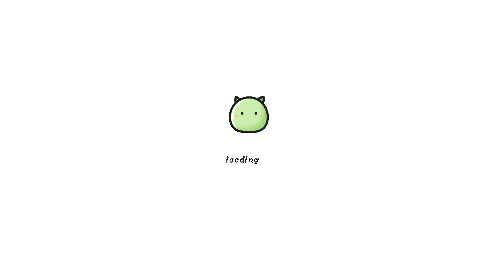

<!DOCTYPE html>
<html>

<head>
    <meta charset="UTF-8">
    <title>太阳系</title>
    <style type="text/css">
        body {
            margin: 0px;
        }

        div#canvas-frame {
            border: none;
            cursor: pointer;
            width: 100%;
            height: 100vh;
            background: url('img/bj.png') no-repeat;
            background-size: cover;
            -webkit-tap-highlight-color:transparent;
        }
		/*
        img {
            width: 0px;
            height: 0px;
            opacity: 0;
        }
		*/
        .back{
            position: absolute;
            top: 0.1rem;
            left: 0.3rem;
            width: 1.5rem;
            height: 1.5rem;
        }
        .back img{
            height: 0.8rem;
            width: 0.8rem;
            /*background: url('./img/goback.png') no-repeat;*/
            /*background-size: cover;*/
        }

        #foot {
            width: 3.1rem;
            height: 1.2rem;
            position: absolute;
            bottom: 0.1rem;
            left: 6.5rem;
            background: url('img/list.png') no-repeat;
            background-size: cover;
        }

        #foot img {
            width: 100%;
            height: 100%;
        }
        /*.wrap{*/
            /*background: url("img/backTu.png");*/
            /*width: 100%;*/
            /*height: 9rem;*/
        /*}*/

        .loader {
            /*position: fixed;  left: 0px;  top: 0px;  width: 100%;  height: 100%;  z-index: 9999;  background: url('./img/load.gif') 50% 50% no-repeat rgb(249, 249, 249);*/
            position: fixed;  left: 0px;  top: 0px;  width: 100%;  height: 100%;  z-index: 9999;background: #fff;
        }

    </style>
</head>

<body>
        <!--<div id="loadingDiv" class="loader">-->
            <!--&lt;!&ndash;&ndash;&gt;-->
            <!---->
        <!--</div>-->
   <!--<div class="wrap">-->
   <!--</div>-->
       <!-- 存放canvas的容器 -->
       <div id="canvas-frame"></div>
       <div class="back" ></div>
       <div id="foot"></div>


</body>
<script src="js/three.min.js"></script>
<script src="js/OrbitControls.js"></script>
<script src="js/stats.min.js"></script>
<script src="js/jquery.min.js"></script>
<script src="js/common.js"></script>

<script>

//    var _PageHeight = document.documentElement.clientHeight,
//        _PageWidth = document.documentElement.clientWidth;
//    //计算loading框距离顶部和左部的距离（loading框的宽度为215px，高度为61px）
//    var _LoadingTop = _PageHeight > 61 ? (_PageHeight - 61) / 2 : 0,
//        _LoadingLeft = _PageWidth > 215 ? (_PageWidth - 215) / 2 : 0;
    //在页面未加载完毕之前显示的loading Html自定义内容

//    var _LoadingHtml = '<div id="loadingDiv" style=""><div style="position: fixed; cursor1: wait; left: 0px; top:0px; width: auto; height: 57px; line-height: 57px; padding-left: 50px; padding-right: 5px; background: #fff url(http://img.zcool.cn/community/01909155a905dc32f875495ea197c9.gif) no-repeat scroll 5px 10px; border: 2px solid #95B8E7; color: #696969; font-family:\'Microsoft YaHei\';"></div></div>';
//    //呈现loading效果
//    document.write(_LoadingHtml);

    //window.onload = function () {
    //    var loadingMask = document.getElementById('loadingDiv');
    //    loadingMask.parentNode.removeChild(loadingMask);
    //};


//        document.addEventListener('DOMContentLoaded', function () {
//            var loadingMask = document.getElementById('loadingDiv');
//                loadingMask.appendChild('');
////            loadingMask.innerHTML = ''
//        })

    //监听加载状态改变
//    document.onreadystatechange = completeLoading;
//
//    //加载状态为complete时移除loading效果
//    function completeLoading() {
//        if (document.readyState == "complete") {
//            console.log("jiazaiwancheng")
//            var loadingMask = document.getElementById('loadingDiv');
//            loadingMask.parentNode.removeChild(loadingMask);
//        }
//    }


    var foot = document.querySelector('#foot');
    foot.onclick = function () {
        window.location.href = 'list.html';
    }
    //调用Android的退出app
    var back = document.querySelector('.back');


    back.onclick = function () {

        if( typeof( goofypapaGame ) != "undefined" && goofypapaGame ){
            window.location.href='goofypapa://back';
        }else{
            window.android.exitApp()
        }
    }


        //太阳、水星、金星、地球、火星、木星、土星、天王星、海王星、冥王星、月亮
        //自身半径
        var sizeArr = [1392000, 4878, 12103.6, 12756, 6794, 142984, 120540, 51118, 49532, 2298, 3476.28]
        //距离太阳多少千米 去掉4个0
        var siteArr = [0, 5791, 10820, 14960, 22794, 77833, 142700, 287099, 450400, 591352]
        //缩小多少倍  决定大小
        var multipleSize = sizeArr[3] / 10;
        //决定大小
        var sunSize = sizeArr[0] / multipleSize / 13;  //太阳
        var mercurySize = sizeArr[1] / multipleSize * 4;  //水星
        var venusSize = sizeArr[2] / multipleSize * 3 //金星
        var earthSize = sizeArr[3] / multipleSize * 3;  //地球
        var marsSize = sizeArr[4] / multipleSize * 4;  //火星
        var jupiterSize = sizeArr[5] / multipleSize / 3;  //木星
        var saturnSize = sizeArr[6] / multipleSize / 3;  //土星
        var uranusSize = sizeArr[7] / multipleSize; //天王星
        var neptuneSize = sizeArr[8] / multipleSize;  //海王星
        var plutoSize = sizeArr[9] / multipleSize * 8;  //冥王星
        var sizeAll = [sunSize, mercurySize, venusSize, earthSize, marsSize, jupiterSize, saturnSize, uranusSize, neptuneSize, plutoSize];

        //缩小多少倍  决定位置
        var multipleSite = siteArr[9] / 5791;
        //决定位置
        var mercurySite = siteArr[1] / multipleSite / 3 + 100;  //水星  0.02
        var venusSite = siteArr[2] / multipleSite / 2 + 100;  //金星  0.012
        var earthSite = siteArr[3] / multipleSite / 1.5 + 100;  //地球  0.010
        var marsSite = siteArr[4] / multipleSite / 1.5 + 100;  //火星  0.008
        var jupiterSite = siteArr[5] / multipleSite / 3.8 + 100;  //木星  0.006
        var saturnSite = siteArr[6] / multipleSite / 5 + 100;  //土星  0.005
        var uranusSite = siteArr[7] / multipleSite / 8 + 100;  //天王星  0.003
        var neptuneSite = siteArr[8] / multipleSite / 10.5 + 100;  //海王星  0.002
        var plutoSite = siteArr[9] / multipleSite / 11.5 + 100;  //冥王星  0.001
        var siteAll = [0, mercurySite, venusSite, earthSite, marsSite, jupiterSite, saturnSite, uranusSite, neptuneSite, plutoSite];

        var multipleSitename = siteArr[9] ;
        var mercurySitename = siteArr[1] / multipleSitename / 3 ;  //水星  0.02
        var venusSitename = siteArr[2] / multipleSitename / 2 ;  //金星  0.012
        var earthSitename = siteArr[3] / multipleSitename / 1.5 ;  //地球  0.010
        var marsSitename = siteArr[4] / multipleSitename / 1.5 ;  //火星  0.008
        var jupiterSitename = siteArr[5] / multipleSitename / 3.8 ;  //木星  0.006
        var saturnSitename = siteArr[6] / multipleSitename / 5 ;  //土星  0.005
        var uranusSitename = siteArr[7] / multipleSitename / 8 ;  //天王星  0.003
        var neptuneSitename = siteArr[8] / multipleSitename / 10.5 ;  //海王星  0.002
        var plutoSitename = siteArr[9] / multipleSitename / 11.5;  //冥王星  0.001
        var siteAllname = [0, mercurySitename, venusSitename, earthSitename, marsSitename, jupiterSitename, saturnSitename, uranusSitename, neptuneSitename, plutoSitename];


        window.onload = function () {
            threeStart();
            console.log('window.onload')
        }


        // 帧
        var stats;
        function initStats() {
            stats = new Stats();
            document.getElementById('canvas-frame').appendChild(stats.dom);
        }

        // 渲染器
        var renderer;
        function initThree() {
            width = document.getElementById('canvas-frame').clientWidth;
            height = document.getElementById('canvas-frame').clientHeight;
            renderer = new THREE.WebGLRenderer({
                antialias: true,
                alpha: true,
                canvas: renderer
            });
            renderer.setSize(width, height);
            document.getElementById('canvas-frame').appendChild(renderer.domElement);
            renderer.setClearColor(0x00000,0);
        }

        // 相机
        var camera;
        function initCamera() {
            // 透视相机 视角越大，看到的场景越大，那么中间的物体相对于整个场景来说，就越小了
            camera = new THREE.PerspectiveCamera(45, window.innerWidth / window.innerHeight, 20, 10000);
            camera.position.x = -100;
            camera.position.y = -800;
            camera.position.z = -500;
            camera.up.x = 0; //设置相机的上为「x」轴方向
            camera.up.y = 1; //设置相机的上为「y」轴方向
            camera.up.z = 0; //设置相机的上为「z」轴方向
            camera.lookAt({ x: 0, y: 0, z: 0 });
        }

        // 场景
        var scene;
        function initScene() {
            scene = new THREE.Scene();


            //天空盒
//        var path = "https://dadpat-public.oss.cn-north-1.jcloudcs.com/app/astronomy/App/astronomy/img/";//设置路径
//        var directions = ["backTu", "backTu", "backTu", "backTu", "backTu", "backTu"];//获取对象
//        var format = ".jpg";//格式
//        //创建盒子，并设置盒子的大小为( 5000, 5000, 5000 )
//        var skyGeometry = new THREE.BoxGeometry(5000, 5000, 5000);
//        //设置盒子材质
//        var materialArray = [];
//        for (var i = 0; i < 6; i++)
//            materialArray.push(new THREE.MeshBasicMaterial({
//                map: THREE.ImageUtils.loadTexture(path + directions[i] + format),//将图片纹理贴上
//                side: THREE.BackSide/*镜像翻转，如果设置镜像翻转，那么只会看到黑漆漆的一片，因为你身处在盒子的内部，所以一定要设置镜像翻转。*/
//            }));
//        var skyMaterial = new THREE.MeshFaceMaterial(materialArray);
//        var skyBox = new THREE.Mesh(skyGeometry, skyMaterial);//创建一个完整的天空盒，填入几何模型和材质的参数
//        scene.add(skyBox);//在场景中加入天空盒


            scene.add();//在场景中加入天空盒
        }

        // 光源
        var light;
        function initLight() {
            // A light source positioned directly above the scene, with color fading from the sky color to the ground color.
            // 位于场景正上方的光源，颜色从天空颜色渐变为地面颜色。
            //  var light = new THREE.HemisphereLight(0xffffbb, 0x080820, 1);
            // scene.add(light);

            // 环境光
            light = new THREE.AmbientLight(0xFFFFFF);
            light.position.set(100, 100, 200);
            scene.add(light);

            // 平行光
            // 位置不同，方向光作用于物体的面也不同，看到的物体各个面的颜色也不一样
            // light = new THREE.DirectionalLight(0xffffbb, 1);
            // light.position.set(-1, 1, 1);
            // scene.add(light);
        }

        //星球
        var imgAll = ['img/sun.jpg', 'img/mercury.jpg', 'img/venus.jpg', 'img/earth.jpg', 'img/mars.jpg', 'img/jupiter.jpg', 'img/saturn.jpg', 'img/uranus.jpg', 'img/neptune.jpg', 'img/pluto.jpg']
        var imgAlla = ['name=sun', 'name=mercury', 'name=venus', 'name=earth', 'name=mars', 'name=jupiter', 'name=saturn', 'name=uranus', 'name=neptune', 'name=pluto']
        var imgname = ['太阳', '水星', '金星', '地球', '火星', '木星', '土星', '天王星', '海王星', '冥王星']
        var starAll = [];
        var NameAll = [];
        function initStar() {
            var starMesh;
            for (var i = 0; i < sizeAll.length; i++) {
                /*
                 var img = new Image();
                 img.setAttribute("crossOrigin",'');
                 img.src = imgAll[i];
                 console.log(img.src)
                 img.onerror = function () {
                 console.log('error');
                 }
                 img.onload = function () {
                 console.log('success');
                 }
                 imgSrc.push(img.src);
                 */
                var starGeo = new THREE.SphereGeometry(sizeAll[i], 100, 100);
                var loader=new THREE.TextureLoader();
                //loader.crossOrigin=undefined;
                loader.crossOrigin='';
                //'https://dadpat-public.oss.cn-north-1.jcloudcs.com/app/astronomy/App/astronomy/img/sun.jpg';
//                var res=loader.load('https://dadpat-public.oss.cn-north-1.jcloudcs.com/app/astronomy/App/astronomy/'+imgAll[i]);
                var res=loader.load(''+imgAll[i]);
                var starMater = new THREE.MeshPhongMaterial({
                    //map: new THREE.TextureLoader().load(imgSrc[i]),
                    map:res,
                    side: THREE.DoubleSide
                });
//
//                var aba =  new THREE.Sprite(new THREE.SpriteCanvasMaterial({program: function(cxt){
//
//                    cxt.font = "blod 40px Arial";
//
//                    cxt.fillStyle = "#ff0000";
//
//                    cxt.fillText("1111", 0, 0);//文字和x坐标， y坐标；
//
//                }  }));

                //先用画布将文字画出
                let canvas = document.createElement("canvas");
//                canvas.width = 120;
//                canvas.height = 150;
                let ctx = canvas.getContext("2d");
                ctx.fillStyle = "#ffff00";
                ctx.font = "Bold 50px Arial";
                ctx.lineWidth = 4;
                ctx.fillText(imgname[i],-20,104);
                let texture = new THREE.Texture(canvas);
                texture.needsUpdate = true;

                //使用Sprite显示文字
                let material = new THREE.SpriteMaterial({map:texture});
                let textObj = new THREE.Sprite(material);
                textObj.scale.set(0.5 * 50, 0.25 * 50, 0.75 * 50);
                textObj.position.set(siteAll[i],0,98);

                var textWidth = material.width;
                starMesh = new THREE.Mesh(starGeo, starMater);
                starMesh.position.set(siteAll[i], 0, 0); //各星球的位置
                starAll.push(starMesh);
                NameAll.push(textObj);
                starMesh.rotateX(-Math.PI / 180 * 270);
//                textObj.rotateX(-Math.PI / 270* 180 );
                scene.add(starMesh);
//                scene.add(textObj);

            }
        }

        //弧度
        var radian = [0, 0, 0, 0, 0, 0, 0, 0, 0, Math.PI / 180 * -20];
        //Y周倍数
        var multipleY = 1.3;
        // 轨道
        function initCircle() {
            var arr = [];
            for (var i = 0; i < siteAll.length; i++) {
                //MeshBasicMaterial 基础网孔材料
                var material = new THREE.MeshBasicMaterial({
                    color: 0x888888,
//                    color: 'transparent',
                    side: THREE.DoubleSide
                });
                //TorusGeometry 创建圆环面几何模型的类
                // var geometry = new THREE.TorusGeometry(siteAll[i], 0.1, 16, 50, Math.PI * 2 )
                // 椭圆
                var curve = new THREE.EllipseCurve(
                    0, 0,            // ax, aY
                    siteAll[i], siteAll[i] / multipleY,   // xRadius, yRadius
                    0, 2 * Math.PI,  // aStartAngle, aEndAngle
                    false,            // aClockwise
                    0                 // aRotation
                );
                var points = curve.getPoints(50);
                var geometry = new THREE.BufferGeometry().setFromPoints(points);
                //Line 线
                var mercuryCircle = new THREE.Line(geometry, material);
                //旋转的弧度
                //mercuryCircle.rotateX(radian[i]);
                mercuryCircle.rotateY(radian[i]);
                scene.add(mercuryCircle);
            }
        }

        //控制器
        var controls;

        function initControls() {

            controls = new THREE.OrbitControls(camera, renderer.domElement);

            // 如果使用animate方法时，将此函数删除
            //controls.addEventListener( 'change', render );
            // 使动画循环使用时阻尼或自转 意思是否有惯性
            controls.enableDamping = true;
            //动态阻尼系数 就是鼠标拖拽旋转灵敏度
            controls.dampingFactor = 0.25;
            //是否可以缩放
            controls.enableZoom = true;
            //是否自动旋转
            controls.autoRotate = false;
            //设置相机距离原点的最远距离
            controls.minDistance = 200;
            //设置相机距离原点的最远距离
            controls.maxDistance = 1200;
            //是否开启右键拖拽
            controls.enablePan = true;
        }

        function render() {
            renderer.render(scene, camera);
        }

        //窗口变动触发的函数
        function onWindowResize() {

            camera.aspect = window.innerWidth / window.innerHeight;
            camera.updateProjectionMatrix();
            render();
            renderer.setSize(window.innerWidth, window.innerHeight);

        }


        function threeStart() {
            initThree();
            //initStats(); // 帧
            initCamera();
            initScene();
            initLight();
            initStar();  //星球
            initCircle();  //轨道
            // 载入控制器
            initControls()
//            controls = new THREE.OrbitControls(camera, renderer.domElement);
            renderer.clear();
            animate();
        }

        var angleAll = [0.0, 0.0, 0.0, 0.0, 0.0, 0.0, 0.0, 0.0, 0.0, 0.0];

        function animate() {
            controls.update();
            //stats.update();
            // 地球自转
            // earthMesh.rotation.y -= 0.02;

            angleAll[0] += 0.0;
            angleAll[1] += 0.02;
            angleAll[2] += 0.012;
            angleAll[3] += 0.010;
            angleAll[4] += 0.008;
            angleAll[5] += 0.006;
            angleAll[6] += 0.005;
            angleAll[7] += 0.003;
            angleAll[8] += 0.002;
            angleAll[9] += 0.001;

            // 绕3个轴旋转的简单操作。
            var nameAll = [];
            function rotateAll(angle, radian) {
                var m1 = new THREE.Matrix4();
                var m2 = new THREE.Matrix4();
                m1.makeRotationZ(-angle);
                m2.makeRotationY(radian);
                var nameNum = new THREE.Vector4(siteAll[i], 0, 0, 0);
                nameNum.applyMatrix4(m1);
                nameNum.applyMatrix4(m2);
                nameAll.push(nameNum)
            }

            //公转
            for (var i = 0; i < angleAll.length; i++) {
                rotateAll(angleAll[i], radian[i]);
                starAll[i].position.set(nameAll[i].x, nameAll[i].y / multipleY, nameAll[i].z);
                starAll[i].rotation.y -= 0.02;
                starAll[0].rotation.y = 0;
//                NameAll[i].position.set(nameAll[i].x, nameAll[i].y / multipleY,nameAll[i].z);
//                NameAll[i].rotation.y -= 5;
//                NameAll[0].rotation.y = 50;
            }

            renderer.render(scene, camera);
            requestAnimationFrame(animate);

    }

        var raycaster = new THREE.Raycaster();
        var mouse = new THREE.Vector2();

        function onMouseClick( event ) {

            //通过鼠标点击的位置计算出raycaster所需要的点的位置，以屏幕中心为原点，值的范围为-1到1.

            mouse.x = ( event.clientX / window.innerWidth ) * 2 - 1;
            mouse.y = - ( event.clientY / window.innerHeight ) * 2 + 1;

            // 通过鼠标点的位置和当前相机的矩阵计算出raycaster
            raycaster.setFromCamera( mouse, camera );

            // 获取raycaster直线和所有模型相交的数组集合
            var intersects = raycaster.intersectObjects( scene.children );

            console.log(intersects,intersects[0].object.material.map.image.currentSrc);

            //将所有的相交的模型的颜色设置为红色，如果只需要将第一个触发事件，那就数组的第一个模型改变颜色即可
           if ( intersects.length>0) {
                for(var u =0;u<starAll.length;u++ ){
                    if(intersects[0].object== starAll[u]){
                        console.log(u)
                        window.location.href="details.html?"+imgAlla[u]
                    }
                }
//                intersects[ i ].object.material.color.set( 0xff0000 );

            }

        }

        window.addEventListener( 'click', onMouseClick, false );


</script>

</html>